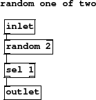
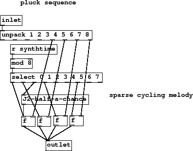
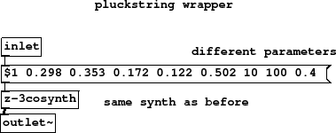

Subsections
Figure 28 summary
- same synth as before with different program
- effects
Hardly any difference to the previous wrapper. Different
delay and feedback times for the effects is all that is
apparent at this level.
J1-plucks.pd
Figure 29 summary
We keep using the technique of choosing an event based on
a half probability. Let's make that an abstraction and choose
a smarter way to do it. Instead of passing a values with
a spigot after they are chosen (with certainty), remove events
from a stream before they trigger anything. It's very
simple, for each bang on the inlet choose [random 2], value of
0 or 1, and [select 1] to get only half of them.
Figure 29:
J2-half-a-chance
|

|
J2-half-a-chance.pd
Figure 30 summary
Notes 5, 6, 7 and 8 are taken from the chord and repeatedly play
a little motif 8 beats long. Beats 1, 2, 4 and 7 always play, but
beat 3 is occasionally missing.
Figure 30:
J2-pluckseq
|

|
J2-pluckseq.pd
Figure 31 summary
- different parameters
- same synth as before
Now see the powerful reuse possible with abstractions.
Synth [z-3cosynth] is the same one used for the bass
line but a different set of parameters in the list makes it
a plucked string sound instead.
Figure 31:
J3-pluck-synth
|

|
J3-pluck-synth.pd
Figure 32 summary
An important part of bringing this sound alive is the rather short
delay time and feedback, half a beat, a common effect on
twangy guitar and short percussives and often called a "slapback"
delay. Delays shorter than a beat mimic early reverb reflections
instead of distinct echos and can add a closeness to the sound.
J4-pluck-play.pd
J4-pluck-play.ogg
Andy Farnell
http://obiwannabe.co.uk/